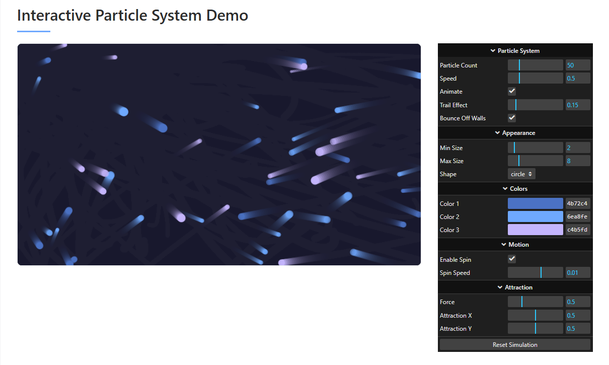
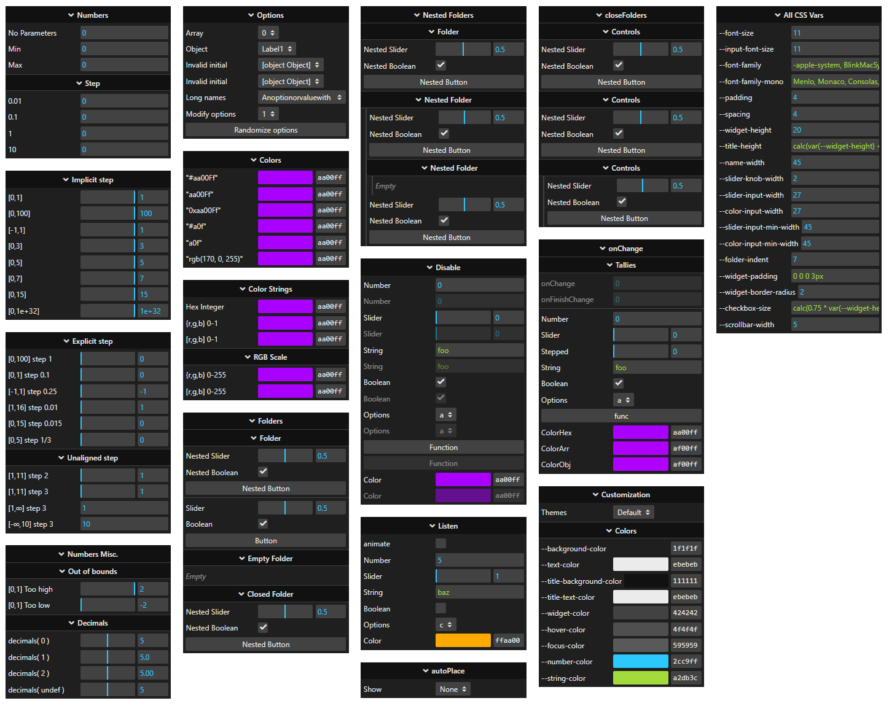

rad-gui
RAD-GUI 🎮

Lightweight, flexible GUI controls for your JavaScript applications
Create beautiful control panels with minimal code
✨ Features
- Lightweight & Fast: Designed for performance with minimal dependencies
- Modern API: Clean, chainable interface for building controls
- Responsive: Works across desktop and mobile devices
- Highly Customizable: Easily themed with CSS variables
- Compatible: Inspired by and compatible with lil-gui and dat-gui as a drop-in replacement
- Fully Typed: Written in TypeScript with complete type definitions
- AI-Ready: Includes LLM-optimized codebase reference for AI assistants and agents
📦 Installation
# Using npm
npm install rad-gui
# Using yarn
yarn add rad-gui
🚀 Quick Start
JavaScript
import { GUI } from 'rad-gui';
import 'rad-gui/lib/rad-gui.css';
// Create a GUI instance
const gui = new GUI();
const params = { x: 0, y: 0, color: '#ff0000' };
gui.add(params, 'x', 0, 100);
gui.addColor(params, 'color');
TypeScript
import { GUI, ControlEventData } from 'rad-gui';
import 'rad-gui/lib/rad-gui.css';
interface DemoParams {
x: number;
y: number;
color: string;
enabled: boolean;
}
const gui = new GUI({ title: 'Controls', width: 300 });
const params: DemoParams = { x: 0, y: 0, color: '#ff0000', enabled: true };
// Full type safety and IntelliSense support
gui.add(params, 'x', 0, 100)
.onChange((data: ControlEventData<number>) => {
console.log(`X changed to ${data.value}`);
});
gui.addColor(params, 'color');
gui.add(params, 'enabled');
For a complete example, see our TypeScript Example which demonstrates all features with proper typing.
📚 Documentation
RAD-GUI provides comprehensive type definitions and IntelliSense support for TypeScript projects. The library includes:
- Complete type definitions for all controls and options
- Proper event callback typing with structured data
- Generic overloads for type-safe parameter handling
- Interface definitions for configuration objects
📋 API Reference
Creating a GUI
// Basic GUI creation
const gui = new GUI();
// With options
const gui = new GUI({
title: 'My Controls',
width: 300,
autoPlace: false,
closeFolders: true
});
Adding Controls
// Auto-detected control types
gui.add(object, 'numberProperty'); // → NumberControl
gui.add(object, 'booleanProperty'); // → ToggleControl
gui.add(object, 'stringProperty'); // → TextControl
gui.add(object, 'functionProperty'); // → FunctionControl
// Explicit control types
gui.add(object, 'number', 0, 100, 1); // NumberControl with range
gui.add(object, 'option', ['A', 'B', 'C']); // OptionControl
gui.addColor(object, 'color'); // ColorControl
Event Handling
// Individual control events
gui.add(params, 'value')
.onChange((data: ControlEventData) => {
console.log(`${data.property} changed to ${data.value}`);
})
.onFinishChange((data: ControlEventData) => {
console.log('Finished changing:', data);
});
// Global GUI events
gui.onChange((data: ControlEventData) => {
// Called for any control change
});
gui.onOpenClose((gui: GUI) => {
// Called when folders open/close
});
doSomething() {
console.log('Button clicked!');
}
};
// Add controls
gui.addColor(params, 'color').name('Color');
gui.add(params, 'x', 0, 100).name('X Position');
gui.add(params, 'y', 0, 100).name('Y Position');
gui.add(params, 'enabled').name('Enabled');
gui.add(params, 'option', ['A', 'B', 'C']).name('Option');
gui.add(params, 'doSomething').name('Run Action');
// Create a folder for grouped controls
const folder = gui.addFolder('Advanced Settings');
folder.add(params, 'x').step(5).name('X (Step 5)');
Previews
 📚 Documentation
📖 Complete Usage Guide
Step-by-step tutorials, best practices, and advanced usage examples
For API details and reference information, visit the API Reference.
🤖 For AI Assistants and Tools
This project includes a .llm.reference.md file specifically designed for AI assistants, agents, and tools to better understand and work with the codebase. This file contains:
- Comprehensive architecture overview
- Key component descriptions
- Usage patterns and code examples
- Core utility functions
AI tools can reference this file to provide more accurate and helpful suggestions when working with rad-gui.
📋 Available Controls
RAD-GUI supports various control types based on the parameter's value and provided options:
| Type | Description | Example |
|---|---|---|
| Number | Slider or text input for numbers | gui.add(params, 'x', 0, 100) |
| Boolean | Checkbox for true/false values | gui.add(params, 'visible') |
| String | Text input field | gui.add(params, 'name') |
| Function | Button that calls a function | gui.add(params, 'save') |
| Color | Color picker | gui.addColor(params, 'color') |
| Options | Dropdown for selecting from options | gui.add(params, 'size', ['S', 'M', 'L']) |
🎨 Customization
RAD-GUI is easily styled using CSS variables:
// Create and apply a custom theme
const darkTheme = {
'--background-color': '#1a1a1a',
'--text-color': '#e0e0e0',
'--title-background-color': '#272727',
'--title-text-color': '#ffffff',
'--widget-color': '#2c2c2c',
'--hover-color': '#3c3c3c',
'--focus-color': '#444444',
'--number-color': '#2cc9ff',
'--string-color': '#a2db3c'
};
// Apply theme to a specific GUI instance
Object.entries(darkTheme).forEach(([key, value]) => {
gui.domElement.style.setProperty(key, value);
});
📝 Examples
Explore more examples in the examples directory:
- TypeScript Example - Comprehensive TypeScript demonstration with all control types, event handling, and best practices
- Basic Controls - Simple introduction to rad-gui
- Kitchen Sink - Demonstrates all available controls
- Compatibility Demo - Shows compatibility with dat-gui
🧪 Development
# Install dependencies
npm install
# Build development version
npm run build:dev
# Run tests
npm run test
# View demo
npm run local:kitchen-sink